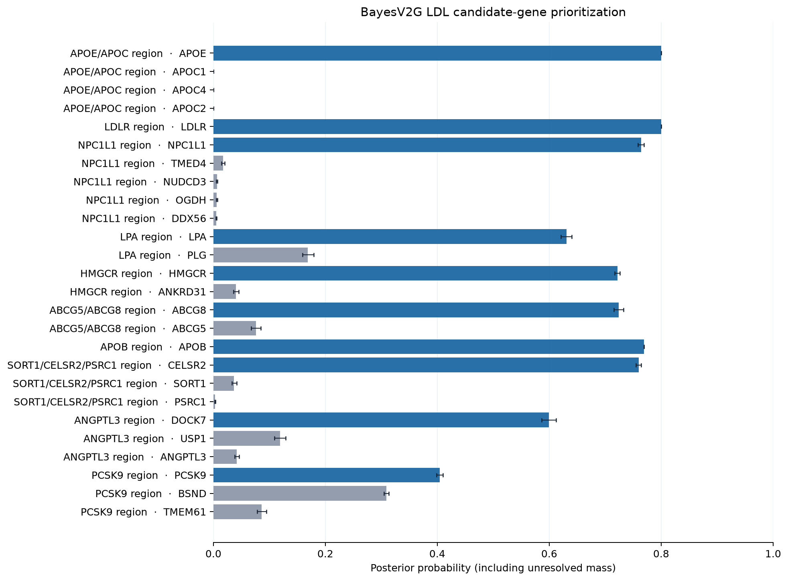
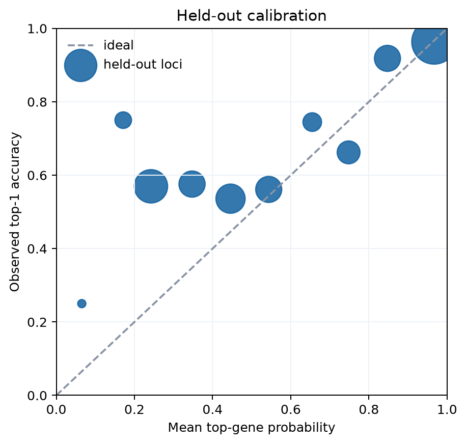
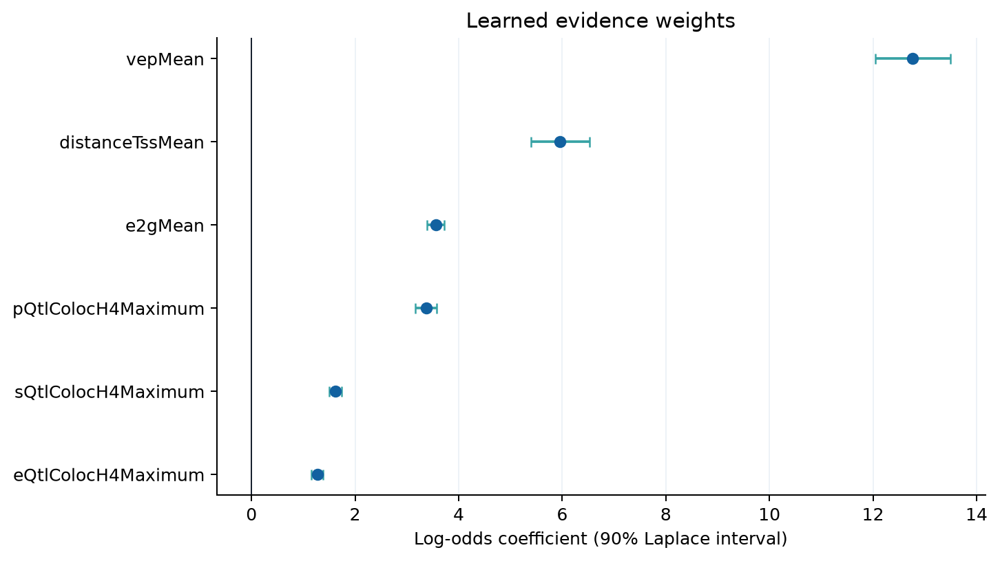

BayesV2G
A Bayesian, locus-conditional ranking of candidate genes at ten real LDL-cholesterol GWAS signals.
Top result at each signal
The live API exposes candidates only after an external L2G score threshold of 0.05. The table therefore shows both the within-set conditional probability and the probability after unresolved mass. 2 loci have only one surfaced candidate; their conditional value is structurally 1.0 and is not evidence-derived certainty.
| Locus | Lead variant | Top gene | Candidates | Singleton | Conditional posterior | Absolute posterior | P05 | P95 | Unresolved | Evidence coverage | Distance (kb) |
|---|---|---|---|---|---|---|---|---|---|---|---|
| PCSK9 region | rs4500361 | PCSK9 | 3 | False | 0.506 | 0.404 | 0.399 | 0.410 | 0.200 | 40% | 14.3 |
| ANGPTL3 region | rs12239736 | DOCK7 | 3 | False | 0.789 | 0.599 | 0.586 | 0.612 | 0.240 | 60% | 68.2 |
| SORT1/CELSR2/PSRC1 region | rs12740374 | CELSR2 | 3 | False | 0.950 | 0.760 | 0.755 | 0.764 | 0.200 | 100% | 25.4 |
| APOB region | rs1042034 | APOB | 1 | True | 1.000 | 0.770 | 0.770 | 0.770 | 0.230 | 20% | 41.7 |
| ABCG5/ABCG8 region | rs4245791 | ABCG8 | 2 | False | 0.905 | 0.724 | 0.715 | 0.733 | 0.200 | 60% | 15.3 |
| HMGCR region | rs184692007 | HMGCR | 2 | False | 0.947 | 0.722 | 0.717 | 0.726 | 0.238 | 60% | 65.6 |
| LPA region | rs10455872 | LPA | 2 | False | 0.789 | 0.631 | 0.621 | 0.641 | 0.200 | 20% | 75.2 |
| NPC1L1 region | rs2073547 | NPC1L1 | 5 | False | 0.957 | 0.764 | 0.759 | 0.769 | 0.201 | 60% | 1.4 |
| LDLR region | rs28493980 | LDLR | 1 | True | 1.000 | 0.800 | 0.800 | 0.800 | 0.200 | 20% | 12.1 |
| APOE/APOC region | rs429358 | APOE | 4 | False | 1.000 | 0.800 | 0.800 | 0.800 | 0.200 | 80% | 4.9 |

Raw-data audit: rs12740374
A separately downloaded, Tabix-sliced 1 Mb region from GWAS Catalog study GCST90018961 contains 5,772 real summary-statistic rows. A transparent single-signal Wakefield-ABF check assigns the lead variant an approximate PIP of 0.990. This approximation ignores LD and is a teaching/audit calculation; the main ranking uses Open Targets' SuSiE-inf credible set from GCST90019512.
| Variant | GRCh38 position | Beta | SE | GWAS p-value | Approx. PIP |
|---|---|---|---|---|---|
| rs12740374 | 109274968 | -0.1173 | 0.0027 | 9.58e-411 | 0.9901 |
| rs7528419 | 109274570 | -0.1170 | 0.0027 | 1.05e-409 | 0.0080 |
| rs646776 | 109275908 | 0.1169 | 0.0027 | 2.78e-409 | 0.0016 |
| rs629301 | 109275684 | 0.1168 | 0.0027 | 4.04e-409 | 0.0003 |
| rs660240 | 109275216 | 0.1146 | 0.0027 | 2.91e-384 | 0.0000 |
Regional, allele-matched summary statistics from eQTL Catalogue were then colocalized with the GWAS using a classic five-hypothesis single-signal ABF calculation. The liver eQTL data support a shared signal for all three genes, while the available plasma SORT1 pQTL does not show comparable H4 support. This calculation assumes at most one causal variant per trait and ignores LD. Because PP(H4) is prior-dependent, the table includes common effect-prior variances W=.01, .04 (the primary column), and .16.
| Evidence | Dataset | Gene | Shared SNVs | PP(H3) | PP(H4) | PP(H4), W=.01 | PP(H4), W=.16 | Top shared variant | Variant PIP | H4 | Shared CS size |
|---|---|---|---|---|---|---|---|---|---|---|
| liver_eQTL | QTD000266 | SORT1 | 2413 | 0.0000 | 1.0000 | 1.0000 | 1.0000 | rs12740374 | 1.0000 | 1 |
| liver_eQTL | QTD000266 | PSRC1 | 2413 | 0.0000 | 1.0000 | 1.0000 | 1.0000 | rs12740374 | 1.0000 | 1 |
| liver_eQTL | QTD000266 | CELSR2 | 2413 | 0.0002 | 0.9998 | 0.9998 | 0.9998 | rs12740374 | 0.9987 | 1 |
| plasma_pQTL | QTD000584 | SORT1 | 2548 | 0.1295 | 0.0164 | 0.0290 | 0.0089 | rs12740374 | 0.9898 | 1 |
At the same lead variant, GTEx v10 liver reports strong eQTL effects for all three highlighted genes. PSRC1 is nearest by GTEx v39 TSS, while integrated evidence changes the ranking—exactly the distinction between proximity and mediation that BayesV2G is designed to expose.
| Gene | GTEx v39 TSS distance (bp) | GTEx liver NES | GTEx p-value | BayesV2G rank | BayesV2G posterior | External L2G |
|---|---|---|---|---|---|---|
| CELSR2 | 25429 | 1.069 | 4.72e-46 | 1 | 0.760 | 0.956 |
| SORT1 | 122950 | 1.272 | 1.13e-65 | 2 | 0.037 | 0.990 |
| PSRC1 | 8218 | 1.242 | 8.47e-50 | 3 | 0.003 | 0.203 |
Model and held-out validation
The model is a conditional categorical regression: genes compete within each independently fine-mapped signal and conditional probabilities sum to one before explicit unresolved mass is added. Coefficients use Normal(0, 0.75²) priors and a Laplace posterior approximation.
Against the distance-only comparator, the paired top-1 difference is 0.073 (locus-bootstrap 95% interval 0.046 to 0.102; 10,000 resamples).
| Model | n_loci | top1_accuracy | recall_at_3 | mean_reciprocal_rank | multiclass_log_loss | brier_score | mean_entropy |
|---|---|---|---|---|---|---|---|
| BayesV2G | 1048.0 | 0.731 | 0.860 | 0.816 | 1.143 | 0.453 | 1.180 |
| uniform | 1048.0 | 0.114 | 0.327 | 0.294 | 2.453 | 0.885 | 2.455 |
| distance_only | 1048.0 | 0.658 | 0.803 | 0.744 | 2.085 | 0.784 | 2.182 |
| eqtl_coloc_only | 1048.0 | 0.280 | 0.498 | 0.449 | 3.143 | 0.848 | 1.461 |
| vep_only | 1048.0 | 0.585 | 0.673 | 0.669 | 1.939 | 0.709 | 2.108 |

Learned evidence weights
Coefficients are predictive weights for a full one-unit contrast in bounded, correlated evidence features. They are not causal effects and their magnitudes are not directly comparable without considering each feature's distribution.
| Feature | Mean | SD | P05 | P95 | exp(Mean) |
|---|---|---|---|---|---|
| distanceTssMean | 5.957 | 0.344 | 5.392 | 6.522 | 386.45 |
| eQtlColocH4Maximum | 1.269 | 0.066 | 1.160 | 1.377 | 3.56 |
| pQtlColocH4Maximum | 3.368 | 0.124 | 3.164 | 3.573 | 29.03 |
| sQtlColocH4Maximum | 1.620 | 0.075 | 1.496 | 1.744 | 5.05 |
| vepMean | 12.766 | 0.441 | 12.041 | 13.492 | 350266.38 |
| e2gMean | 3.556 | 0.101 | 3.391 | 3.722 | 35.04 |

Sensitivity
Prior-scale and leave-one-evidence-class-out scenarios were refitted at the MAP estimate; unresolved-mass assumptions of 10% and 40% were also evaluated. 0 locus-scenario combinations changed the top-ranked gene.
| scenario | scenario_type | studyLocusId | locus_label | top_gene | top_probability | reference_gene | reference_probability | top_gene_changed | max_probability_change |
|---|---|---|---|---|---|---|---|---|---|
| prior_scale_0.5 | model_refit_map | 7816d9d3277e4887690cf7591c224bcd | PCSK9 region | PCSK9 | 0.393 | PCSK9 | 0.405 | False | 0.012 |
| prior_scale_0.5 | model_refit_map | 1446ebf0d3feb2602ea450a2156346af | ANGPTL3 region | DOCK7 | 0.604 | DOCK7 | 0.600 | False | 0.005 |
| prior_scale_0.5 | model_refit_map | 5eb8878b948ed248f0832a6a1b27d324 | SORT1/CELSR2/PSRC1 region | CELSR2 | 0.733 | CELSR2 | 0.760 | False | 0.027 |
| prior_scale_0.5 | model_refit_map | b2821c94b2ec7a3298ebed7598b85845 | APOB region | APOB | 0.770 | APOB | 0.770 | False | 0.000 |
| prior_scale_0.5 | model_refit_map | c717610c67981574d1f54731afe4cf46 | ABCG5/ABCG8 region | ABCG8 | 0.714 | ABCG8 | 0.724 | False | 0.010 |
| prior_scale_0.5 | model_refit_map | bca6aa73fca7db990adb7f6b1c1983b1 | HMGCR region | HMGCR | 0.724 | HMGCR | 0.722 | False | 0.002 |
| prior_scale_0.5 | model_refit_map | 7977a97f16317ac62d1755f723d779db | LPA region | LPA | 0.582 | LPA | 0.631 | False | 0.049 |
| prior_scale_0.5 | model_refit_map | 35996c25686ebaab7ff02700c5adee89 | NPC1L1 region | NPC1L1 | 0.766 | NPC1L1 | 0.764 | False | 0.002 |
| prior_scale_0.5 | model_refit_map | fc8876b06188d2d64001c936b6f11c80 | LDLR region | LDLR | 0.800 | LDLR | 0.800 | False | 0.000 |
| prior_scale_0.5 | model_refit_map | 3d8d0092bbd144ceb18ebcb18c28c8e6 | APOE/APOC region | APOE | 0.800 | APOE | 0.800 | False | 0.000 |
| prior_scale_1.5 | model_refit_map | 7816d9d3277e4887690cf7591c224bcd | PCSK9 region | PCSK9 | 0.424 | PCSK9 | 0.405 | False | 0.019 |
| prior_scale_1.5 | model_refit_map | 1446ebf0d3feb2602ea450a2156346af | ANGPTL3 region | DOCK7 | 0.593 | DOCK7 | 0.600 | False | 0.006 |
| prior_scale_1.5 | model_refit_map | 5eb8878b948ed248f0832a6a1b27d324 | SORT1/CELSR2/PSRC1 region | CELSR2 | 0.782 | CELSR2 | 0.760 | False | 0.022 |
| prior_scale_1.5 | model_refit_map | b2821c94b2ec7a3298ebed7598b85845 | APOB region | APOB | 0.770 | APOB | 0.770 | False | 0.000 |
| prior_scale_1.5 | model_refit_map | c717610c67981574d1f54731afe4cf46 | ABCG5/ABCG8 region | ABCG8 | 0.737 | ABCG8 | 0.724 | False | 0.013 |
| prior_scale_1.5 | model_refit_map | bca6aa73fca7db990adb7f6b1c1983b1 | HMGCR region | HMGCR | 0.719 | HMGCR | 0.722 | False | 0.003 |
| prior_scale_1.5 | model_refit_map | 7977a97f16317ac62d1755f723d779db | LPA region | LPA | 0.689 | LPA | 0.631 | False | 0.058 |
| prior_scale_1.5 | model_refit_map | 35996c25686ebaab7ff02700c5adee89 | NPC1L1 region | NPC1L1 | 0.762 | NPC1L1 | 0.764 | False | 0.002 |
| prior_scale_1.5 | model_refit_map | fc8876b06188d2d64001c936b6f11c80 | LDLR region | LDLR | 0.800 | LDLR | 0.800 | False | 0.000 |
| prior_scale_1.5 | model_refit_map | 3d8d0092bbd144ceb18ebcb18c28c8e6 | APOE/APOC region | APOE | 0.800 | APOE | 0.800 | False | 0.000 |
| without_distanceTssMean | model_refit_map | 7816d9d3277e4887690cf7591c224bcd | PCSK9 region | PCSK9 | 0.414 | PCSK9 | 0.405 | False | 0.010 |
| without_distanceTssMean | model_refit_map | 1446ebf0d3feb2602ea450a2156346af | ANGPTL3 region | DOCK7 | 0.620 | DOCK7 | 0.600 | False | 0.021 |
| without_distanceTssMean | model_refit_map | 5eb8878b948ed248f0832a6a1b27d324 | SORT1/CELSR2/PSRC1 region | CELSR2 | 0.770 | CELSR2 | 0.760 | False | 0.010 |
| without_distanceTssMean | model_refit_map | b2821c94b2ec7a3298ebed7598b85845 | APOB region | APOB | 0.770 | APOB | 0.770 | False | 0.000 |
| without_distanceTssMean | model_refit_map | c717610c67981574d1f54731afe4cf46 | ABCG5/ABCG8 region | ABCG8 | 0.736 | ABCG8 | 0.724 | False | 0.012 |
| without_distanceTssMean | model_refit_map | bca6aa73fca7db990adb7f6b1c1983b1 | HMGCR region | HMGCR | 0.730 | HMGCR | 0.722 | False | 0.008 |
| without_distanceTssMean | model_refit_map | 7977a97f16317ac62d1755f723d779db | LPA region | LPA | 0.645 | LPA | 0.631 | False | 0.014 |
| without_distanceTssMean | model_refit_map | 35996c25686ebaab7ff02700c5adee89 | NPC1L1 region | NPC1L1 | 0.780 | NPC1L1 | 0.764 | False | 0.016 |
| without_distanceTssMean | model_refit_map | fc8876b06188d2d64001c936b6f11c80 | LDLR region | LDLR | 0.800 | LDLR | 0.800 | False | 0.000 |
| without_distanceTssMean | model_refit_map | 3d8d0092bbd144ceb18ebcb18c28c8e6 | APOE/APOC region | APOE | 0.800 | APOE | 0.800 | False | 0.000 |
| without_eQtlColocH4Maximum | model_refit_map | 7816d9d3277e4887690cf7591c224bcd | PCSK9 region | PCSK9 | 0.319 | PCSK9 | 0.405 | False | 0.152 |
| without_eQtlColocH4Maximum | model_refit_map | 1446ebf0d3feb2602ea450a2156346af | ANGPTL3 region | DOCK7 | 0.611 | DOCK7 | 0.600 | False | 0.043 |
| without_eQtlColocH4Maximum | model_refit_map | 5eb8878b948ed248f0832a6a1b27d324 | SORT1/CELSR2/PSRC1 region | CELSR2 | 0.765 | CELSR2 | 0.760 | False | 0.005 |
| without_eQtlColocH4Maximum | model_refit_map | b2821c94b2ec7a3298ebed7598b85845 | APOB region | APOB | 0.770 | APOB | 0.770 | False | 0.000 |
| without_eQtlColocH4Maximum | model_refit_map | c717610c67981574d1f54731afe4cf46 | ABCG5/ABCG8 region | ABCG8 | 0.763 | ABCG8 | 0.724 | False | 0.039 |
| without_eQtlColocH4Maximum | model_refit_map | bca6aa73fca7db990adb7f6b1c1983b1 | HMGCR region | HMGCR | 0.697 | HMGCR | 0.722 | False | 0.025 |
| without_eQtlColocH4Maximum | model_refit_map | 7977a97f16317ac62d1755f723d779db | LPA region | LPA | 0.636 | LPA | 0.631 | False | 0.005 |
| without_eQtlColocH4Maximum | model_refit_map | 35996c25686ebaab7ff02700c5adee89 | NPC1L1 region | NPC1L1 | 0.745 | NPC1L1 | 0.764 | False | 0.020 |
| without_eQtlColocH4Maximum | model_refit_map | fc8876b06188d2d64001c936b6f11c80 | LDLR region | LDLR | 0.800 | LDLR | 0.800 | False | 0.000 |
| without_eQtlColocH4Maximum | model_refit_map | 3d8d0092bbd144ceb18ebcb18c28c8e6 | APOE/APOC region | APOE | 0.800 | APOE | 0.800 | False | 0.000 |
| without_pQtlColocH4Maximum | model_refit_map | 7816d9d3277e4887690cf7591c224bcd | PCSK9 region | PCSK9 | 0.415 | PCSK9 | 0.405 | False | 0.014 |
| without_pQtlColocH4Maximum | model_refit_map | 1446ebf0d3feb2602ea450a2156346af | ANGPTL3 region | DOCK7 | 0.606 | DOCK7 | 0.600 | False | 0.006 |
| without_pQtlColocH4Maximum | model_refit_map | 5eb8878b948ed248f0832a6a1b27d324 | SORT1/CELSR2/PSRC1 region | CELSR2 | 0.697 | CELSR2 | 0.760 | False | 0.071 |
| without_pQtlColocH4Maximum | model_refit_map | b2821c94b2ec7a3298ebed7598b85845 | APOB region | APOB | 0.770 | APOB | 0.770 | False | 0.000 |
| without_pQtlColocH4Maximum | model_refit_map | c717610c67981574d1f54731afe4cf46 | ABCG5/ABCG8 region | ABCG8 | 0.725 | ABCG8 | 0.724 | False | 0.001 |
| without_pQtlColocH4Maximum | model_refit_map | bca6aa73fca7db990adb7f6b1c1983b1 | HMGCR region | HMGCR | 0.728 | HMGCR | 0.722 | False | 0.006 |
| without_pQtlColocH4Maximum | model_refit_map | 7977a97f16317ac62d1755f723d779db | LPA region | LPA | 0.639 | LPA | 0.631 | False | 0.008 |
| without_pQtlColocH4Maximum | model_refit_map | 35996c25686ebaab7ff02700c5adee89 | NPC1L1 region | NPC1L1 | 0.776 | NPC1L1 | 0.764 | False | 0.011 |
| without_pQtlColocH4Maximum | model_refit_map | fc8876b06188d2d64001c936b6f11c80 | LDLR region | LDLR | 0.800 | LDLR | 0.800 | False | 0.000 |
| without_pQtlColocH4Maximum | model_refit_map | 3d8d0092bbd144ceb18ebcb18c28c8e6 | APOE/APOC region | APOE | 0.800 | APOE | 0.800 | False | 0.000 |
| without_sQtlColocH4Maximum | model_refit_map | 7816d9d3277e4887690cf7591c224bcd | PCSK9 region | PCSK9 | 0.431 | PCSK9 | 0.405 | False | 0.040 |
| without_sQtlColocH4Maximum | model_refit_map | 1446ebf0d3feb2602ea450a2156346af | ANGPTL3 region | DOCK7 | 0.390 | DOCK7 | 0.600 | False | 0.210 |
| without_sQtlColocH4Maximum | model_refit_map | 5eb8878b948ed248f0832a6a1b27d324 | SORT1/CELSR2/PSRC1 region | CELSR2 | 0.765 | CELSR2 | 0.760 | False | 0.005 |
| without_sQtlColocH4Maximum | model_refit_map | b2821c94b2ec7a3298ebed7598b85845 | APOB region | APOB | 0.770 | APOB | 0.770 | False | 0.000 |
| without_sQtlColocH4Maximum | model_refit_map | c717610c67981574d1f54731afe4cf46 | ABCG5/ABCG8 region | ABCG8 | 0.530 | ABCG8 | 0.724 | False | 0.194 |
| without_sQtlColocH4Maximum | model_refit_map | bca6aa73fca7db990adb7f6b1c1983b1 | HMGCR region | HMGCR | 0.669 | HMGCR | 0.722 | False | 0.053 |
| without_sQtlColocH4Maximum | model_refit_map | 7977a97f16317ac62d1755f723d779db | LPA region | LPA | 0.641 | LPA | 0.631 | False | 0.010 |
| without_sQtlColocH4Maximum | model_refit_map | 35996c25686ebaab7ff02700c5adee89 | NPC1L1 region | NPC1L1 | 0.775 | NPC1L1 | 0.764 | False | 0.010 |
| without_sQtlColocH4Maximum | model_refit_map | fc8876b06188d2d64001c936b6f11c80 | LDLR region | LDLR | 0.800 | LDLR | 0.800 | False | 0.000 |
| without_sQtlColocH4Maximum | model_refit_map | 3d8d0092bbd144ceb18ebcb18c28c8e6 | APOE/APOC region | APOE | 0.800 | APOE | 0.800 | False | 0.000 |
| without_vepMean | model_refit_map | 7816d9d3277e4887690cf7591c224bcd | PCSK9 region | PCSK9 | 0.360 | PCSK9 | 0.405 | False | 0.045 |
| without_vepMean | model_refit_map | 1446ebf0d3feb2602ea450a2156346af | ANGPTL3 region | DOCK7 | 0.611 | DOCK7 | 0.600 | False | 0.011 |
| without_vepMean | model_refit_map | 5eb8878b948ed248f0832a6a1b27d324 | SORT1/CELSR2/PSRC1 region | CELSR2 | 0.571 | CELSR2 | 0.760 | False | 0.189 |
| without_vepMean | model_refit_map | b2821c94b2ec7a3298ebed7598b85845 | APOB region | APOB | 0.770 | APOB | 0.770 | False | 0.000 |
| without_vepMean | model_refit_map | c717610c67981574d1f54731afe4cf46 | ABCG5/ABCG8 region | ABCG8 | 0.677 | ABCG8 | 0.724 | False | 0.047 |
| without_vepMean | model_refit_map | bca6aa73fca7db990adb7f6b1c1983b1 | HMGCR region | HMGCR | 0.729 | HMGCR | 0.722 | False | 0.007 |
| without_vepMean | model_refit_map | 7977a97f16317ac62d1755f723d779db | LPA region | LPA | 0.411 | LPA | 0.631 | False | 0.220 |
| without_vepMean | model_refit_map | 35996c25686ebaab7ff02700c5adee89 | NPC1L1 region | NPC1L1 | 0.776 | NPC1L1 | 0.764 | False | 0.012 |
| without_vepMean | model_refit_map | fc8876b06188d2d64001c936b6f11c80 | LDLR region | LDLR | 0.800 | LDLR | 0.800 | False | 0.000 |
| without_vepMean | model_refit_map | 3d8d0092bbd144ceb18ebcb18c28c8e6 | APOE/APOC region | APOE | 0.796 | APOE | 0.800 | False | 0.004 |
| without_e2gMean | model_refit_map | 7816d9d3277e4887690cf7591c224bcd | PCSK9 region | PCSK9 | 0.435 | PCSK9 | 0.405 | False | 0.030 |
| without_e2gMean | model_refit_map | 1446ebf0d3feb2602ea450a2156346af | ANGPTL3 region | DOCK7 | 0.630 | DOCK7 | 0.600 | False | 0.030 |
| without_e2gMean | model_refit_map | 5eb8878b948ed248f0832a6a1b27d324 | SORT1/CELSR2/PSRC1 region | CELSR2 | 0.758 | CELSR2 | 0.760 | False | 0.004 |
| without_e2gMean | model_refit_map | b2821c94b2ec7a3298ebed7598b85845 | APOB region | APOB | 0.770 | APOB | 0.770 | False | 0.000 |
| without_e2gMean | model_refit_map | c717610c67981574d1f54731afe4cf46 | ABCG5/ABCG8 region | ABCG8 | 0.738 | ABCG8 | 0.724 | False | 0.014 |
| without_e2gMean | model_refit_map | bca6aa73fca7db990adb7f6b1c1983b1 | HMGCR region | HMGCR | 0.736 | HMGCR | 0.722 | False | 0.014 |
| without_e2gMean | model_refit_map | 7977a97f16317ac62d1755f723d779db | LPA region | LPA | 0.674 | LPA | 0.631 | False | 0.043 |
| without_e2gMean | model_refit_map | 35996c25686ebaab7ff02700c5adee89 | NPC1L1 region | NPC1L1 | 0.359 | NPC1L1 | 0.764 | False | 0.405 |
| without_e2gMean | model_refit_map | fc8876b06188d2d64001c936b6f11c80 | LDLR region | LDLR | 0.800 | LDLR | 0.800 | False | 0.000 |
| without_e2gMean | model_refit_map | 3d8d0092bbd144ceb18ebcb18c28c8e6 | APOE/APOC region | APOE | 0.800 | APOE | 0.800 | False | 0.000 |
| unresolved_mass_0.1 | probability_assumption | 7816d9d3277e4887690cf7591c224bcd | PCSK9 region | PCSK9 | 0.455 | PCSK9 | 0.405 | False | 0.051 |
| unresolved_mass_0.1 | probability_assumption | 1446ebf0d3feb2602ea450a2156346af | ANGPTL3 region | DOCK7 | 0.674 | DOCK7 | 0.600 | False | 0.075 |
| unresolved_mass_0.1 | probability_assumption | 5eb8878b948ed248f0832a6a1b27d324 | SORT1/CELSR2/PSRC1 region | CELSR2 | 0.855 | CELSR2 | 0.760 | False | 0.095 |
| unresolved_mass_0.1 | probability_assumption | b2821c94b2ec7a3298ebed7598b85845 | APOB region | APOB | 0.866 | APOB | 0.770 | False | 0.096 |
| unresolved_mass_0.1 | probability_assumption | c717610c67981574d1f54731afe4cf46 | ABCG5/ABCG8 region | ABCG8 | 0.815 | ABCG8 | 0.724 | False | 0.091 |
| unresolved_mass_0.1 | probability_assumption | bca6aa73fca7db990adb7f6b1c1983b1 | HMGCR region | HMGCR | 0.812 | HMGCR | 0.722 | False | 0.090 |
| unresolved_mass_0.1 | probability_assumption | 7977a97f16317ac62d1755f723d779db | LPA region | LPA | 0.710 | LPA | 0.631 | False | 0.079 |
| unresolved_mass_0.1 | probability_assumption | 35996c25686ebaab7ff02700c5adee89 | NPC1L1 region | NPC1L1 | 0.860 | NPC1L1 | 0.764 | False | 0.096 |
| unresolved_mass_0.1 | probability_assumption | fc8876b06188d2d64001c936b6f11c80 | LDLR region | LDLR | 0.900 | LDLR | 0.800 | False | 0.100 |
| unresolved_mass_0.1 | probability_assumption | 3d8d0092bbd144ceb18ebcb18c28c8e6 | APOE/APOC region | APOE | 0.900 | APOE | 0.800 | False | 0.100 |
| unresolved_mass_0.4 | probability_assumption | 7816d9d3277e4887690cf7591c224bcd | PCSK9 region | PCSK9 | 0.304 | PCSK9 | 0.405 | False | 0.101 |
| unresolved_mass_0.4 | probability_assumption | 1446ebf0d3feb2602ea450a2156346af | ANGPTL3 region | DOCK7 | 0.450 | DOCK7 | 0.600 | False | 0.150 |
| unresolved_mass_0.4 | probability_assumption | 5eb8878b948ed248f0832a6a1b27d324 | SORT1/CELSR2/PSRC1 region | CELSR2 | 0.570 | CELSR2 | 0.760 | False | 0.190 |
| unresolved_mass_0.4 | probability_assumption | b2821c94b2ec7a3298ebed7598b85845 | APOB region | APOB | 0.577 | APOB | 0.770 | False | 0.192 |
| unresolved_mass_0.4 | probability_assumption | c717610c67981574d1f54731afe4cf46 | ABCG5/ABCG8 region | ABCG8 | 0.543 | ABCG8 | 0.724 | False | 0.181 |
| unresolved_mass_0.4 | probability_assumption | bca6aa73fca7db990adb7f6b1c1983b1 | HMGCR region | HMGCR | 0.541 | HMGCR | 0.722 | False | 0.180 |
| unresolved_mass_0.4 | probability_assumption | 7977a97f16317ac62d1755f723d779db | LPA region | LPA | 0.473 | LPA | 0.631 | False | 0.158 |
| unresolved_mass_0.4 | probability_assumption | 35996c25686ebaab7ff02700c5adee89 | NPC1L1 region | NPC1L1 | 0.573 | NPC1L1 | 0.764 | False | 0.191 |
| unresolved_mass_0.4 | probability_assumption | fc8876b06188d2d64001c936b6f11c80 | LDLR region | LDLR | 0.600 | LDLR | 0.800 | False | 0.200 |
| unresolved_mass_0.4 | probability_assumption | 3d8d0092bbd144ceb18ebcb18c28c8e6 | APOE/APOC region | APOE | 0.600 | APOE | 0.800 | False | 0.200 |
Data provenance
- GWAS study
- GCST90019512
- Trait
- Low density lipoprotein cholesterol levels
- Genome build
- GRCh38
- Open Targets release
- 26.09
- Training release
- 26.06
- Training revision
- 6abe9cc490222986925e1acca696d48c9b2437a4
- Snapshot SHA-256
- 08228615ad728112f676a25dfa1dc3bba3b83042681b29271a95760df216a98f
- Analysis source SHA-256
- f79d4a1f2937583e73e6e022c02ccafeaf97353c902cb34b8d2b03e96ce36252
- Open Targets TLS verified
- True
- SORT1 JSON/metadata TLS verified
- True
Raw credible-set variants, PIPs, candidate features, model artifacts and the complete run manifest are beside this report. The Open Targets external L2G score is retained only as a comparison column and is not used by the Bayesian model.
Interpretation limits
- The API surfaces Open Targets candidates whose external L2G score is at least 0.05; omitted genes are represented only through unresolved mass.
- Training labels are curated biological knowledge and may partly rely on the same evidence classes, so held-out accuracy can still be optimistic.
- QTL feature values summarize the maximum across available studies/tissues and zeros do not cleanly distinguish a true null from unavailable or underpowered evidence.
- Out-of-sample LD was used for these SuSiE-inf credible sets. Ancestry/LD mismatch and multiple biological mediators remain model limitations.
Generated 2026-09-28T04:41:47.415128+00:00. Reproduce with bayesv2g run.